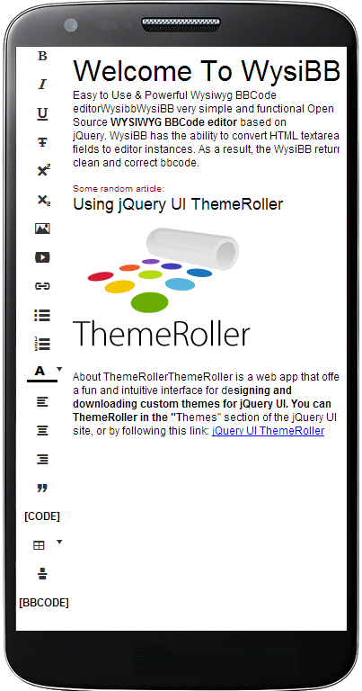

Welcome To WysiBB
Easy to Use & Powerful Wysiwyg BBcode editor
Try it!
Why WysiBB
Easy to Use
To add WysiBB on website, you must add a few lines of code to the page.
Modern and Responsible
WysiBB support all modern browser on PC, tablets and mobile devices.
Fast and lightweight
WysiBB based on jQuery and works really fast. Do not believe, try it.
One WysiBB, every device.


Quick start
<head>
<!-- Load jQuery -->
<script src="//ajax.googleapis.com/ajax/libs/jquery/1.11.0/jquery.min.js"></script>
<!-- Load WysiBB JS and Theme -->
<script src="/js/jquery.wysibb.min.js"></script>
<link rel="stylesheet" href="/css/default/wbbtheme.css" />
<!-- Init WysiBB BBCode editor -->
<script>
$(function() {
$("#editor").wysibb();
})
</script>
</head>
<body>
<textarea id="editor"></textarea>
</body>